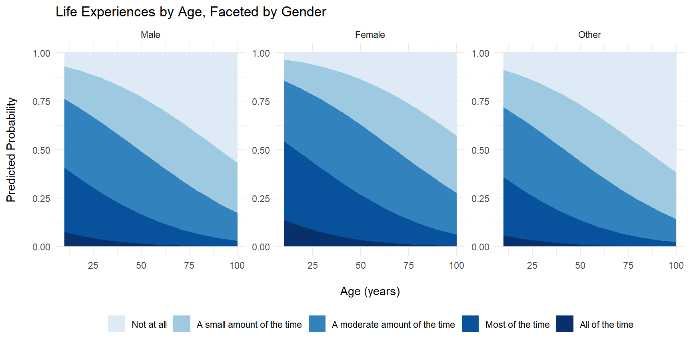

library(tidyverse)
library(broom)
library(performance)
library(ordinal)
library(car)
library(ggeffects)
library(gofcat)
library(brms)
library(emmeans)
library(knitr)
library(MASS)
library(patchwork)
library(grid)
library(gridExtra)In the previous post, the step() function output the following models for the first half of the concert:
Fictional story: polr(formula = Fictional_story ~ Age, data = completed_data1, control = list(maxit = 1000), na.action = na.exclude, Hess = TRUE, method = “probit”)
Abstract shapes: polr(formula = Abstract_shapes ~ Age, data = completed_data1, control = list(maxit = 1000), na.action = na.exclude, Hess = TRUE, method = “probit”)
Sensory sensations: polr(formula = Sensory_sensations ~ 1, data = completed_data1, control = list(maxit = 1000), na.action = na.exclude, Hess = TRUE, method = “probit”)
Life experiences: polr(formula = Life_experiences ~ Age + Gender, data = completed_data1, control = list(maxit = 1000), na.action = na.exclude, Hess = TRUE, method = “probit”)
Media: polr(formula = Media ~ Age, data = completed_data1, control = list(maxit = 1000), na.action = na.exclude, Hess = TRUE, method = “probit”)
Music: polr(formula = Music ~ Music_listening + Practice, data = completed_data1, control = list(maxit = 1000), na.action = na.exclude, Hess = TRUE, method = “probit”)
Future plans: polr(formula = Future_plans ~ Age, data = completed_data1, control = list(maxit = 1000), na.action = na.exclude, Hess = TRUE, method = “probit”)
Building: polr(formula = Building ~ Age + Gender + Music_listening + Floor, data = completed_data1, control = list(maxit = 1000), na.action = na.exclude, Hess = TRUE, method = “probit”)
Everyday: polr(formula = Everyday ~ Age, data = completed_data1, control = list(maxit = 1000), na.action = na.exclude, Hess = TRUE, method = “probit”)
Let’s run these models now, plot them, and have a closer look at the results.
Loading the data:
data1 <- read_csv("https://raw.githubusercontent.com/hw3446/Final_Project_PUC/main/posts/Dataset_overview/working_data/data.csv")
data2 <- read_csv("https://raw.githubusercontent.com/hw3446/Final_Project_PUC/main/posts/Dataset_overview/working_data/data2.csv")Some data tidying and treatment of N/As (as in last post):
outcome_vars <- c("Fictional_story", "Abstract_shapes", "Sensory_sensations",
"Life_experiences", "Media", "Music", "Future_plans",
"Building", "Everyday")
# Converting outcome variables to factors with consistent levels for each thought type
data1[outcome_vars] <- lapply(data1[outcome_vars], factor,
levels = c("Not at all", "A small amount of the time",
"A moderate amount of the time", "Most of the time",
"All of the time"))
data2[outcome_vars] <- lapply(data2[outcome_vars], factor,
levels = c("Not at all", "A small amount of the time",
"A moderate amount of the time", "Most of the time",
"All of the time"))
#Remaking the floor variable
data1 <- data1 %>%
mutate(Floor = ifelse(Location %in% c("A", "B", "C", "D", "E", "F"), "Downstairs", "Upstairs")) %>% relocate(Floor, .after = Location)
data2 <- data2 %>%
mutate(Floor = ifelse(Location %in% c("A", "B", "C", "D", "E", "F"), "Downstairs", "Upstairs")) %>% relocate(Floor, .after = Location)
#Making sure demographic variables are classed in the right way.
data1$Age <- as.numeric(data1$Age)
data2$Age <- as.numeric(data2$Age)
data1$Practice <- as.numeric(as.character(data1$Practice))
data2$Practice <- as.numeric(as.character(data2$Practice))
data1$Gender <- factor(data1$Gender, levels = c('Male', 'Female', 'Other'))
data2$Gender <- factor(data2$Gender, levels = c('Male', 'Female', 'Other'))
data1$Music_listening <- factor(data1$Music_listening, levels = c('Very rarely', 'Somewhat rarely', 'Moderately frequently', 'Frequently', 'Very frequently'))
data2$Music_listening <- factor(data2$Music_listening, levels = c('Very rarely', 'Somewhat rarely', 'Moderately frequently', 'Frequently', 'Very frequently'))
data1$Floor <- factor(data1$Floor, levels = c('Downstairs', 'Upstairs'))
data2$Floor <- factor(data2$Floor, levels = c('Downstairs', 'Upstairs'))library(mice)
imputed_data1 <- mice(data1, m = 5, method = 'pmm', seed = 123, print = FALSE)
completed_data1 <- complete(imputed_data1, 1)Running the models:
senses <- polr(formula = Sensory_sensations ~ 1, data = completed_data1, control = list(maxit = 1000), na.action = na.exclude, Hess = TRUE, method = "probit")
music <- polr(formula = Music ~ Music_listening + Practice, data = completed_data1, control = list(maxit = 1000), na.action = na.exclude, Hess = TRUE, method = "probit")
building <- polr(formula = Building ~ Age + Gender + Music_listening + Floor, data = completed_data1, control = list(maxit = 1000), na.action = na.exclude, Hess = TRUE, method = "probit")
life <- polr(formula = Life_experiences ~ Age + Gender, data = completed_data1, control = list(maxit = 1000), na.action = na.exclude, Hess = TRUE, method = "probit")Many of the models select age as the strongest predictor. We can plot them using a loop.
outcome_age <- c("Fictional_story", "Abstract_shapes",
"Media", "Future_plans",
"Everyday")
plot_list <- list()
for (outcome in outcome_age) {
model <- polr(as.formula(paste(outcome, "~ Age")), data = completed_data1, control = list(maxit = 1000), na.action = na.exclude, Hess = TRUE, method = "probit")
predicted_probs <- ggemmeans(model, terms = c("Age"))
plot <- ggplot(predicted_probs, aes(x = x, y = predicted, fill = response.level)) +
geom_area() +
labs(x = "\nAge (years)", y = "Predicted Probability\n",
title = paste(outcome, "by Age")) +
scale_fill_manual(
name = NULL,
values = setNames(c("#deebf7", "#9ecae1", "#3182bd", "#08519c", "#08306b"),
levels(completed_data1[[outcome]])),
labels = c("Not at all", "A small amount of the time", "A moderate amount of the time",
"Most of the time", "All of the time"),
breaks = c("Not at all", "A small amount of the time", "A moderate amount of the time",
"Most of the time", "All of the time")
) +
theme_minimal()
plot_list[[outcome]] <- plot
}
title_grob <- textGrob("Types of Thoughts by Age, First Half", gp = gpar(fontsize = 16, fontface = "bold"))
Age_thoughts_models <- grid.arrange(
grobs = plot_list,
ncol = 3,
top = title_grob
)
Let’s now tackle the plots with other predictors.
response_levels <- c("Not at all", "A small amount of the time", "A moderate amount of the time",
"Most of the time", "All of the time")
fill_colors <- c("#deebf7", "#9ecae1", "#3182bd", "#08519c", "#08306b")
names(fill_colors) <- response_levels
music <- polr(formula = Music ~ Music_listening + Practice, data = completed_data1, control = list(maxit = 1000), na.action = na.exclude, Hess = TRUE, method = "probit")
pred_music <- ggemmeans(music, terms = c("Practice", "Music_listening"))
ggplot(pred_music, aes(x = x, y = predicted, fill = response.level)) +
geom_area(alpha = 1) +
facet_wrap(~ group, scales = "free_y") +
labs(x = "\nPractice (years)", y = "Predicted Probability\n", title = "Music by Practice, Faceted by Classical Music listening") +
scale_fill_manual(name = NULL, values = fill_colors) +
theme_minimal() +
theme(legend.position = "bottom")
life <- polr(formula = Life_experiences ~ Age + Gender, data = completed_data1, control = list(maxit = 1000), na.action = na.exclude, Hess = TRUE, method = "probit")
pred_life <- ggemmeans(life, terms = c("Age", "Gender"))
ggplot(pred_life, aes(x = x, y = predicted, fill = response.level)) +
geom_area(alpha = 1) +
facet_wrap(~ group, scales = "free_y") + # Facet by Practice
labs(x = "\nAge (years)", y = "Predicted Probability\n", title = "Life Experiences by Age, Faceted by Gender") +
scale_fill_manual(name = NULL, values = fill_colors) +
theme_minimal() +
theme(legend.position = "bottom")
This plot shows probability of thinking about the building or space by age, faceted by floor and holding Gender + Music listening constant.
building <- polr(formula = Building ~ Age + Gender + Music_listening + Floor, data = completed_data1, control = list(maxit = 1000), na.action = na.exclude, Hess = TRUE, method = "probit")
pred_building <- ggemmeans(building, terms = c("Age", "Floor"))
ggplot(pred_building, aes(x = x, y = predicted, fill = response.level)) +
geom_area(alpha = 1) +
facet_wrap(~ group, scales = "free_y") +
labs(x = "\nAge (years)", y = "Predicted Probability\n", title = "Building by Age, Faceted by Floor") +
scale_fill_manual(name = NULL, values = fill_colors) +
theme_minimal() +
theme(legend.position = "bottom")We’ll also do a brant test that loops through each of our models:
library(MASS)
library(brant)
models <- list(
fiction = polr(Fictional_story ~ Age, data = completed_data1, method = "logistic", Hess = TRUE),
abstract = polr(Abstract_shapes ~ Age, data = completed_data1, method = "logistic", Hess = TRUE),
sense = polr(formula = Sensory_sensations ~ 1, data = completed_data1, control = list(maxit = 1000), na.action = na.exclude, Hess = TRUE, method = "probit"),
life = polr(formula = Life_experiences ~ Age + Gender, data = completed_data1, control = list(maxit = 1000), na.action = na.exclude, Hess = TRUE, method = "probit"),
media = polr(formula = Media ~ Age, data = completed_data1, control = list(maxit = 1000), na.action = na.exclude, Hess = TRUE, method = "probit"),
music = polr(formula = Music ~ Music_listening + Practice, data = completed_data1, control = list(maxit = 1000), na.action = na.exclude, Hess = TRUE, method = "probit"),
future = polr(formula = Future_plans ~ Age, data = completed_data1, control = list(maxit = 1000), na.action = na.exclude, Hess = TRUE, method = "probit"),
building = polr(formula = Building ~ Age + Gender + Music_listening + Floor, data = completed_data1, control = list(maxit = 1000), na.action = na.exclude, Hess = TRUE, method = "probit"),
everyday = polr(formula = Everyday ~ Age, data = completed_data1, control = list(maxit = 1000), na.action = na.exclude, Hess = TRUE, method = "probit")
)
lapply(models, function(model) {
tryCatch({
brant.test(model)
}, error = function(e) {
message("Error in model: ", conditionMessage(e))
return(NULL)
})
})$fiction
Brant Test:
chi-sq df pr(>chi)
Omnibus 6.66 3 0.083 .
Age 6.66 3 0.083 .
---
Signif. codes: 0 '***' 0.001 '**' 0.01 '*' 0.05 '.' 0.1 ' ' 1
H0: Proportional odds assumption holds
$abstract
Brant Test:
chi-sq df pr(>chi)
Omnibus 2.16 3 0.54
Age 2.16 3 0.54
H0: Proportional odds assumption holds
$sense
NULL
$life
Brant Test:
chi-sq df pr(>chi)
Omnibus 5.620 9 0.78
Age 0.628 3 0.89
GenderFemale 4.736 3 0.19
GenderOther 0.000 3 1.00
H0: Proportional odds assumption holds
$media
Brant Test:
chi-sq df pr(>chi)
Omnibus 3.12 2 0.21
Age 3.12 2 0.21
H0: Proportional odds assumption holds
$music
Brant Test:
chi-sq df pr(>chi)
Omnibus 10.45 15 0.79
Music_listeningSomewhat rarely 0.00 3 1.00
Music_listeningModerately frequently 0.00 3 1.00
Music_listeningFrequently 0.00 3 1.00
Music_listeningVery frequently 0.00 3 1.00
Practice 1.49 3 0.69
H0: Proportional odds assumption holds
$future
Brant Test:
chi-sq df pr(>chi)
Omnibus 0.68 3 0.88
Age 0.68 3 0.88
H0: Proportional odds assumption holds
$building
Brant Test:
chi-sq df pr(>chi)
Omnibus 13.502 24 0.96
Age 4.631 3 0.20
GenderFemale 0.957 3 0.81
GenderOther 0.000 3 1.00
Music_listeningSomewhat rarely 0.000 3 1.00
Music_listeningModerately frequently 0.000 3 1.00
Music_listeningFrequently 0.000 3 1.00
Music_listeningVery frequently 0.000 3 1.00
FloorUpstairs 2.299 3 0.51
H0: Proportional odds assumption holds
$everyday
Brant Test:
chi-sq df pr(>chi)
Omnibus 4.66 3 0.2
Age 4.66 3 0.2
H0: Proportional odds assumption holdsFinally, a summary of the latent coefficients with p values:
library(tibble)
library(dplyr)
all_results <- tibble()
for (model_name in names(models)) {
model <- models[[model_name]]
model_summary <- summary(model)
coef_table <- model_summary$coefficients
# Calculate t-values and p-values
t_values <- coef_table[, "Value"] / coef_table[, "Std. Error"]
p_values <- 2 * (1 - pnorm(abs(t_values)))
model_results <- tibble(
Model = model_name,
Term = rownames(coef_table),
Estimate = coef_table[, "Value"],
`Std. Error` = coef_table[, "Std. Error"],
`t value` = t_values,
`p value` = p_values
)
all_results <- bind_rows(all_results, model_results)
}
# Print the combined data frame with results for all models
library(DT)
datatable(all_results)SECOND HALF
I won’t plot the models for the second half for the sake of space, but I’ll grab some descriptive statistics for comparison.
These were the models.
Models that match with the first half:
polr(formula = Fictional_story ~ Age, data = completed_data2, control = list(maxit = 1000), Hess = TRUE, method = “logistic”)
polr(formula = Sensory_sensations ~ 1, data = completed_data2, control = list(maxit = 1000), Hess = TRUE, method = “logistic”)
polr(formula = Media ~ Age, data = completed_data2, control = list(maxit = 1000), Hess = TRUE, method = “logistic”)
polr(formula = Future_plans ~ Age, data = completed_data2, control = list(maxit = 1000), Hess = TRUE, method = “logistic”)
polr(formula = Everyday ~ Age, data = completed_data2, control = list(maxit = 1000), Hess = TRUE, method = “logistic”)
Models that don’t match the first half:
polr(formula = Abstract_shapes ~ 1, data = completed_data2, control = list(maxit = 1000), Hess = TRUE, method = “logistic”)
polr(formula = Life_experiences ~ Age, data = completed_data2, control = list(maxit = 1000), Hess = TRUE, method = “logistic”)
polr(formula = Music ~ Age + Gender + Practice, data = completed_data2, control = list(maxit = 1000), Hess = TRUE, method = “logistic”)
polr(formula = Building ~ Floor, data = completed_data2, control = list(maxit = 1000), Hess = TRUE, method = “logistic”)
library(mice)
library(MASS)
#Impute data for second half
imputed_data2 <- mice(data2, m = 5, method = 'pmm', seed = 123, print = FALSE)
completed_data2 <- complete(imputed_data2, 1)
#List models
models2 <- list(
fiction = polr(Fictional_story ~ Age, data = completed_data2, method = "logistic", Hess = TRUE),
abstract = polr(Abstract_shapes ~ 1, data = completed_data2, method = "logistic", Hess = TRUE),
sense = polr(formula = Sensory_sensations ~ 1, data = completed_data2, control = list(maxit = 1000), na.action = na.exclude, Hess = TRUE, method = "probit"),
life = polr(formula = Life_experiences ~ Age, data = completed_data2, control = list(maxit = 1000), na.action = na.exclude, Hess = TRUE, method = "probit"),
media = polr(formula = Media ~ Age, data = completed_data2, control = list(maxit = 1000), na.action = na.exclude, Hess = TRUE, method = "probit"),
music = polr(formula = Music ~ Age + Gender + Practice, data = completed_data2, control = list(maxit = 1000), na.action = na.exclude, Hess = TRUE, method = "probit"),
future = polr(formula = Future_plans ~ Age, data = completed_data2, control = list(maxit = 1000), na.action = na.exclude, Hess = TRUE, method = "probit"),
building = polr(formula = Building ~ Floor, data = completed_data2, control = list(maxit = 1000), na.action = na.exclude, Hess = TRUE, method = "probit"),
everyday = polr(formula = Everyday ~ Age, data = completed_data2, control = list(maxit = 1000), na.action = na.exclude, Hess = TRUE, method = "probit")
)
# Loop through each model
all_results <- tibble()
for (model_name in names(models2)) {
model <- models2[[model_name]]
model_summary <- summary(model)
coef_table <- model_summary$coefficients
t_values <- coef_table[, "Value"] / coef_table[, "Std. Error"]
p_values <- 2 * (1 - pnorm(abs(t_values)))
model_results <- tibble(
Model = model_name,
Term = rownames(coef_table),
Estimate = coef_table[, "Value"],
`Std. Error` = coef_table[, "Std. Error"],
`t value` = t_values,
`p value` = p_values
)
all_results <- bind_rows(all_results, model_results)
}
# Print the combined data frame with results for all models
datatable(all_results)